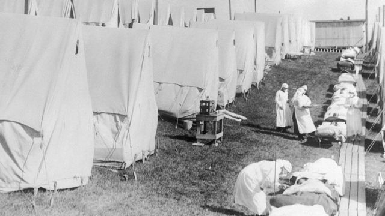

HISTORIA
En el siglo XVIII, el coronavirus bovino estaba ligado al humano y,los investigadores están de acuerdo en que fue entre 1890 y 1899 cuando se produjo el nacimiento del que afecta a las personas, pero no saben si fue por una separación respecto al bovino o por una mutación. A pesar de esta línea temporal, el familiar común más cercano se remonta a la década de los 50 del siglo XX. Se trata del OC43 y se encuentra estrechamente relacionado con varias especies de murciélagos, según han señalado los últimos estudios. En humanos fue detectado por primera vez en los años 60, concretamente en las cavidades nasales y desde entonces han sido identificados seis nuevos miembros de esta familia, siendo el último el 2019-nCoV o coronavirus.
ORIGEN

El 31 de diciembre de 2019, la Organización Mundial de la Salud (OMS) recibió reportes de presencia de neumonía, de origen desconocido, en la ciudad de Wuhan, en China. Rápidamente, a principios de enero, las autoridades de este país identificaron la causa como una nueva cepa de coronavirus. La enfermedad ha ido expandiéndose hacia otros continentes como Asia, Europa y América. En cuanto a su comienzo, todavía no se ha confirmado el posible origen animal de la COVID-19.
Este escenario se refiere a la posibilidad de que en un laboratorio de investigación con virus haya ocurrido un incidente que causó el contagio accidental del personal. El documento aclara que no analizaron la posibilidad de que alguien haya esparcido el virus deliberadamente. Tampoco indagó acerca de si el virus fue fabricado en un laboratorio, ya que esta posibilidad ya ha sido descartada por otros científicos a partir del análisis del genoma del virus. El informe reconoce que, aunque son casos raros, es posible que en un laboratorio ocurran accidentes. "Cuando se trabaja en particular con cultivos de virus, pero también con inoculaciones de animales o muestras clínicas, los seres humanos podrían infectarse en laboratorios con bioseguridad limitada, malas prácticas o negligencia", señala el documento. La misión de la OMS también visitó el Instituto de Virología de Wuhan como parte de su investigación. Sin embargo, el informe apunta que "no hay registros de virus estrechamente relacionados con el SARS-CoV-2 en ningún laboratorio antes de diciembre de 2019, o genomas que en combinación podrían proporcionar un genoma de SARS-CoV-2". Según la OMS, los tres laboratorios de Wuhan que trabajan con coronavirus tienen "niveles de bioseguridad de alta calidad", con un personal en el que no se reportaron enfermedades relacionadas con la covid-19 durante las semanas o meses anteriores a diciembre de 2019. Tedros, sin embargo, dijo que "se necesitan más datos y estudios para alcanzar conclusiones más robustas" acerca de la posibilidad de que el virus haya sido producto de un incidente en un laboratorio, un argumento en el que insistió el gobierno de Donald Trump sin presentar prueba alguna. "Aunque el equipo ha concluido que una fuga de laboratorio es la hipótesis menos probable, esto requiere una mayor investigación, posiblemente con misiones adicionales que involucren a expertos especializados", dijo el director de la OMS.